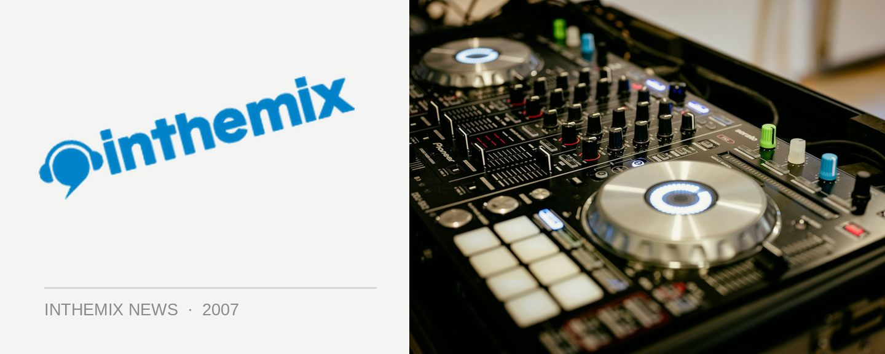

Monkey Tennis gets in on the Long Weekend action
Need a healthy does of jackin’ house this weekend? Monkey Tennis is back at Candys Apartment this weekend and this time they’ll be hosting a special set from US house act Jacob London.
With a production resume dating back to the early 90’s, Bob Hansen and Dave Pezzner are veterans of Seattle’s tech-house scene. They formed Jacob London in 1997 as an outlet for their more soulful techno-house hybrids. A few years later they joined forces with up-and-coming deep house label Viva! to create an outlet for their sound, and hence squid:records was born. They’ve been responsible for a number of house hits over the years and you’ll have the chance to check out their sound when they hit Monkey Tennis this weekend.
Get on down to Candys Apartment this Saturday night for your jackin’ action, things kick off from 9pm.